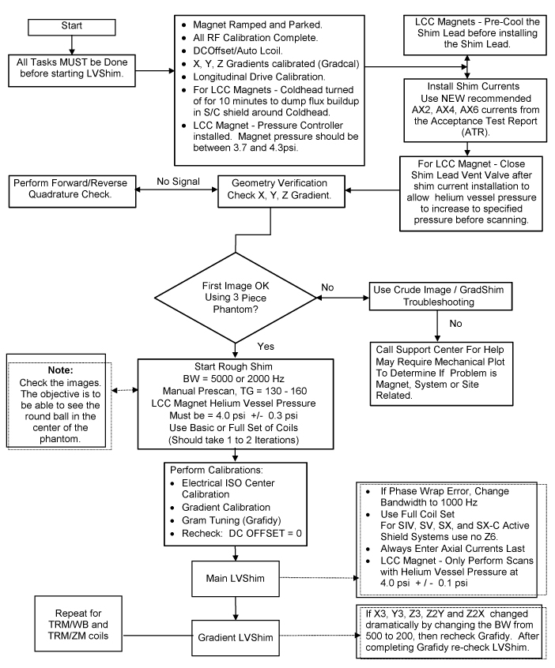

Operating Documentation
Direction 5133330-3, Rev# 14
Signa EXCITE HD 3.0T Service Methods
Module Version 1.0, Version Date 5/3/07
Operating Documentation |
For the experienced Field Engineer familiar with the shimming tools and process, see Illustration 2-1, LVSHIM FLOWCHART, for the basic steps. For the inexperienced Field Engineer, refer to Section 3 - LVshim Process – Long Version, which gives all the detailed information.
| ||||
| Refer to Section 3-8, Troubleshooting and Solutions, when problems are encountered during the shimming process. | ||||
| ||||
| POISON HAZARD! | ||||
| THE PHANTOM CONTAINS NICKEL, A SUSPECT CARCINOGEN. | ||||
| DO NOT INGEST! DISPOSE OF AS A HAZARDOUS WASTE ACCORDING TO STATE AND FEDERAL REGULATIONS. |
Illustration 1: VSHIM FLOWCHART
